Validation of FjordSim's Oslofjord simulation
Abstract
FjordSim ran the Oslofjord on a 160 m grid from 2024-10-01 to 2026-10-01. We score it against 899 NIVA casts, 108 IMR casts and three tide gauges, beside NorKyst v3 160 m, NorKyst v3 800 m and NorFjords 160 m. FjordSim keeps the stratification best: it has the lowest salinity RMSE (2.02 against 2.23 g/kg for NorKyst v3 160 m on the same samples) and is the only model with the Drammensfjord's brackish surface layer. NorKyst v3 160 m has the lower temperature RMSE (1.34 against 1.42 °C), but its columns miss the deep water of most sill basins. NorFjords renews the deep basins and has the deep temperature closest to the casts, though it brings in too much salt water. FjordSim renews the deep basins less than the ROMS models NorKyst and NorFjords. Its better stratification and its poorer renewal may both come from the vertical grid. FjordSim's flat z-levels follow the stratification, but on their staircase seabed dense water entering over a sill mixes to the bottom; the terrain-following levels of ROMS carry it down along the seabed. FjordSim's upper layer is too salty throughout and its deep layer too cold in spring 2026, by as much as NorKyst v3 800 m, its boundary source, in the outer fjord: both errors most likely come in over the open boundary. The tide is right to 0.2 cm in M2.
Modelled surface fields
1. The simulation
FjordSim builds and runs fjord models with Oceananigans, a flexible Julia package for finite volume simulations that runs on CPUs and GPUs (Ramadhan et al., 2020). This run covers the Oslofjord from the Skagerrak to Oslo (Fig. 2) for two years.
Table 1 provides an overview of each setting.
| Setting | |
|---|---|
| Period | 2024-10-01 to 2026-10-01. Scores start on 2024-11-01: the first month is the adjustment from the initial state. |
| Domain | 10.00–11.20 °E, 58.95–59.93 °N. One open boundary, along the southern edge. |
| Horizontal grid | 424 × 681 cells of 160 m, longitude–latitude. |
| Vertical grid | 39 z-levels, partial bottom cells. Layer interfaces (m): 0, 1, 2.2, 3.7, 5.5, 7.9, 10.8, 14.5, 19, 25, 32, 41, 46.06, 51.11, 56.17, 61.22, 66.28, 71.33, 76.39, 81.44, 86.5, 91.56, 96.61, 101.67, 106.72, 111.78, 116.83, 121.89, 126.94, 132, 165.5, 199, 232.5, 266, 299.5, 333, 366.5, 400, 433.5, 467. |
| Cells | 11,261,016 in total, 1,318,707 of them water (82,137 water columns). |
| Bathymetry | Kartverket's soundings (Geonorge Dybdedata), gridded at 40 m. Minimum depth 2 m, slopes limited, sills kept: Drøbak 23.5 m (real ≈20 m), Svelvik 10.8 m (real 11 m). |
| Equations | Hydrostatic, Boussinesq, TEOS-10 equation of state, split-explicit free surface, Coriolis on the sphere. |
| Time step | Adaptive, advective CFL 0.3, at most 3 min; 19 s on average. |
| Momentum advection | 5th-order WENO, vector-invariant form. |
| Tracer advection | 5th-order WENO; salinity bounded to 0–40 g/kg. First-order upwind within 3 cells of a river mouth. Where land or the seabed is closer than three cells to a face, temperature falls back to first-order upwind in the top four cells (to 5.5 m) and to second-order centred below. |
| Vertical mixing | CATKE (prognostic turbulent kinetic energy), minimum TKE 7 × 10⁻⁷ m² s⁻². |
| Horizontal mixing | Biharmonic viscosity 9.4 × 10³ m⁴ s⁻¹. |
| Bottom drag | Quadratic, coefficient 0.003. |
| Shortwave | Absorbed over depth in two bands: 58 % over 0.35 m, the rest over 3 m. |
| Open boundary | Hourly T, S, u, v and sea level from NorKyst v3 800 m. Relaxation to the data is 3 h on inflow, 360 days on outflow; a 3.2 km sponge (viscosity 20, diffusivity 10 m² s⁻¹) damps what the boundary radiates. Below 300 m the 300 m value: NorKyst's output stops there. The tide is scaled per constituent to the Viker gauge: NorKyst v3 800 m's M2 at the boundary is 17.7 cm against 12.3 cm observed at Viker (M2 × 0.70). |
| Atmosphere | NORA3 hindcast, hourly, regridded to 0.02°. |
| Rivers | NVE: 23 mouths, every river of at least 0.5 m³/s, 1212 m³/s in total on average. Glomma (two mouths), Drammenselva and six small rivers follow gauged discharge; the rest run at their catchment's normal discharge. |
| Sea ice | None. Temperature is held at or above the freezing point. |
| Initial state | NorKyst v3 on 2024-10-01: the 160 m Oslofjord nest (m71), which covers the domain, the 800 m run (m00) elsewhere. Over the sill basins of the Inner Oslofjord and the Drammensfjord, the NIVA casts nearest the start (within 14 days) replace whole columns. In the Drøbak Sound (Im2), it is only the water below the sill that is replaced. Reason: NorKyst's columns end above the basins' deep water there, and the water was up to 1.9 g/kg too salty and 2.3 °C too cold. |
| Output | Daily 3D T, S, u, v and TKE; hourly surface fields; hourly profiles at 30 stations and at 77 points along the Drammensfjord; hourly velocity at 7 current-meter sites; sea level every 10 min at 3 gauges. |
| Cost | 3.0 days on one NVIDIA L4 GPU. Output writing took a quarter of the time. |
NORA3 overstates the solar radiation: it warmed NorKyst v3's summer surface by up to 0.7–0.8 °C in 2012–2020 (Christensen et al., 2026). FjordSim's surface layer is not too warm in summer 2025 (June to August: +0.2, +0.6, −0.4 °C).
2. Validation data
2.1 Observations
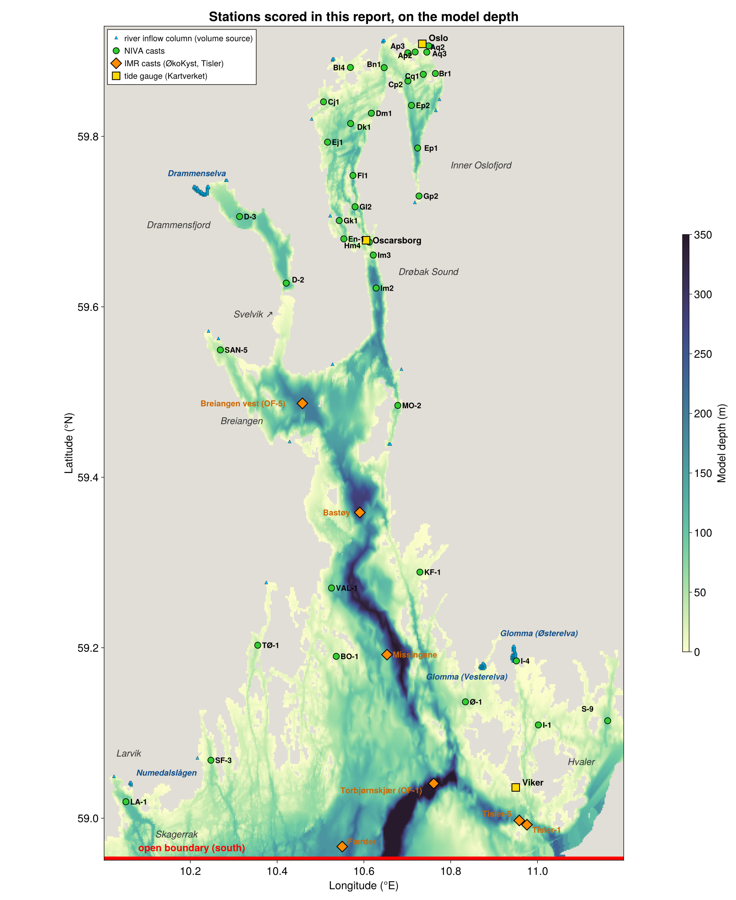
| Source | What | Period | Size |
|---|---|---|---|
| NIVA CTD casts (ODM2) | T and S every 1 m; Inner Oslofjord (Fagrådet) and Outer Oslofjord monitoring | 2024-11-01 to 2026-09-18 | 37 stations, 899 casts, 65 371 samples |
| IMR CTD casts (Vannmiljø) | T and S at fixed depths from 0 to 440 m, dated by day; ØkoKyst and Tisler | 2024-11-01 to 2026-03-06 | 7 stations, 108 casts, 1 184 samples |
| Kartverket tide gauges | Sea level every 10 min | 2024-11-01 to 2026-10-01 | Viker, Oscarsborg, Oslo |
| ADCP in the Svelvik strait | Current at 1–11 m: one month's mean and upper quartile | 1999 | Staalstrøm and Hjelmervik (2017), Table 1 |
The ADCP month is from 1999, so it gives the strait's typical currents, not those of this run's period.
2.2 Reference models
This report uses 3 reference models: NorKyst v3 160 m, NorKyst v3 800 m and NorFjords 160 m. NorKyst v3 160 m and NorKyst v3 800 m are separate simulations. The 160 m nest runs two-way nested in its own 800 m parent, which is not the 800 m run used here. Each station is read from the 160 m nest where it covers the station, else from the 800 m run. So every station has values from one NorKyst model only (800 m: BO-1, I-1, I-4, LA-1, S-9, SF-3, TØ-1, VAL-1, Ø-1).
| FjordSim | NorKyst v3 160 m | NorKyst v3 800 m | NorFjords 160 m | |
|---|---|---|---|---|
| Producer | NIVA | MET Norway | MET Norway | IMR |
| Code | Oceananigans | ROMS | ROMS | ROMS 3.9 |
| Product | This hindcast | Operational forecast, member m71, first day of each forecast | Operational forecast, member m00, first day of each forecast | Hindcast A01 (v3) |
| Domain | Oslofjord, 10.0–11.2 °E, 58.95–59.93 °N | Oslofjord, 9.9–11.4 °E, 59.24–60.03 °N | Norwegian coast | Skagerrak coast, 8.2–12.0 °E, 57.7–60.1 °N |
| Horizontal grid | 160 m, 424 × 681 | 160 m, 417 × 377 | 800 m, 2747 × 1148 | 160 m, 1501 × 721 |
| Vertical grid | 39 z-levels; 1 m at the surface | As 800 m* | 40 terrain-following levels; 0.1–1 m at the surface | 40 terrain-following levels; minimum depth 10 m |
| Vertical mixing | CATKE | As 800 m* | GLS, k–ε, Canuto-A stability functions | GLS |
| Tracer advection | 5th-order WENO | As 800 m* | 3rd-order upwind (T), HSIMT (S) | 3rd-order upstream |
| Horizontal mixing | Biharmonic viscosity; no tracer diffusion | As 800 m* | No interior viscosity; tracer diffusivity 10 m² s⁻¹ | Not published |
| Atmosphere | NORA3 (3 km), hourly | As 800 m* | AROME-MetCoOp (2.5 km), hourly | AROME |
| Open boundary | NorKyst v3 800 m (m00), hourly; tide corrected to Viker | Two-way nested (5:1) in its own 800 m parent, not in m00 | CMEMS Arctic and Baltic models, daily means; TPXO9 tides | NorKyst-800, version not published |
| Rivers | NVE: 23 mouths, 8 with gauged discharge | As 800 m* | NVE daily runoff spread over 247 rivers | Not published |
| Data assimilation | None | As 800 m* | None (4D-Var runs only in the separate 2.4 km NorKyst-DA) | None |
| Output compared | Daily 3D snapshot nearest the cast | Hourly, 15 z-levels to 300 m; hour nearest the cast | Hourly, 15 z-levels to 300 m; hour nearest the cast | Daily means, on the cast's day; ends 2026-06-30 |
| NIVA stations here | 37 | 28 | 9 | 37 |
Sources: Christensen et al. (2026) for NorKyst v3; NorFjords' archive metadata and Albretsen et al. (2022) for NorFjords.
| Basin (station) | Deepest cast | FjordSim | NorKyst v3 160 m | NorFjords 160 m |
|---|---|---|---|---|
| Bunnefjorden (Ep1) | 154 | 151 | 88 | 137 |
| Vestfjorden (Fl1) | 166 | 159 | 50 | 91 |
| Steilene (Dk1) | 110 | 98 | 70 | 96 |
| Drøbak Sound (Im2) | 202 | 181 | 130 | 193 |
| Drammensfjord (D-2) | 120 | 120 | 68 | 104 |
2.3 Scores
- Error is model minus observed, \(e_i = m_i - o_i\), over the \(N\) model–observation pairs; bias is the mean error and RMSE the root-mean-square error: \[\text{bias} = \frac{1}{N}\sum_{i=1}^{N} e_i, \qquad \text{RMSE} = \sqrt{\frac{1}{N}\sum_{i=1}^{N} e_i^2}.\]
- Each reference model is scored beside FjordSim on the samples both have. The sample sets differ: NorKyst's columns end at its own bottom, NorKyst v3 800 m covers only the outer stations, and NorFjords ends on 2026-06-30.
- Depth layers: surface layer (0–5 m), upper layer (5–20 m), intermediate layer (20–50 m), deep layer (below 50 m).
- Regions: Outer fjord, the Outer Oslofjord programme; Inner Oslofjord, north of the Drøbak sill; Drammensfjord, D-2 and D-3.
- Sea level is also scored in 5-day windows with the index λ of Duveiller et al. (2016), as Dalsøren et al. (2020) and Christensen et al. (2026) score fjord currents. λ is the correlation \(r\), lowered for any difference in mean or variance; 1 is perfect. Over a window, \[\lambda = 1 - \frac{\frac{1}{N}\sum_{i=1}^{N} e_i^2}{\sigma_m^2 + \sigma_o^2 + (\bar m - \bar o)^2}\quad (r \ge 0), \qquad \lambda = 0 \quad (r < 0),\]where \(\bar m, \bar o\) are the means and \(\sigma_m, \sigma_o\) the standard deviations of model and observed sea level. A window is good at λ ≥ 0.05; below that, poor where the model's mean anomaly over the window has the wrong sign, else medium.
3. Results
3.1 Overall scores
| Samples | Model | Count | Salinity (g/kg) | Temperature (°C) |
|---|---|---|---|---|
| All samples | FjordSim | 65 371 | +0.29 / 1.59 | −0.55 / 1.52 |
| Where NorKyst v3 160 m has values | FjordSim | 25 426 | +0.90 / 2.02 | −0.31 / 1.42 |
| NorKyst v3 160 m | +1.20 / 2.23 | −0.64 / 1.34 | ||
| Where NorKyst v3 800 m has values | FjordSim | 3 001 | +1.56 / 3.39 | −0.10 / 1.23 |
| NorKyst v3 800 m | +2.07 / 4.32 | −0.10 / 1.16 | ||
| Where NorFjords 160 m has values (to 2026-06-30) | FjordSim | 47 445 | +0.42 / 1.73 | −0.52 / 1.45 |
| NorFjords 160 m | +1.04 / 2.12 | −0.43 / 1.48 |
FjordSim has the lowest salinity RMSE against every reference model: 2.02 against 2.23 g/kg (NorKyst v3 160 m), 3.39 against 4.32 (800 m) and 1.73 against 2.12 (NorFjords). In temperature NorKyst v3 160 m is better (1.34 against 1.42 °C); the 800 m run (1.16 against 1.23) and NorFjords (1.48 against 1.45) are about even with FjordSim. All models are too salty in the top 20 m (Fig. 3, Fig. 7).
The second year is worse than the first. FjordSim's salinity RMSE grows from 1.44 to 1.73 g/kg and its temperature RMSE from 1.16 to 1.83 °C. Most of the temperature loss is in the deep layer (0.91 to 1.99 °C). Year 1 is 2024-11-01 to 2025-10-01, year 2 2025-10-01 to 2026-10-01.
IMR's casts cover the outer fjord from Færder to Breiangen, to 2026-03-06. FjordSim's RMSE there is 2.16 g/kg and 1.27 °C; on the samples both have, NorFjords' is 2.25 against 2.18 g/kg and 1.08 against 1.28 °C.
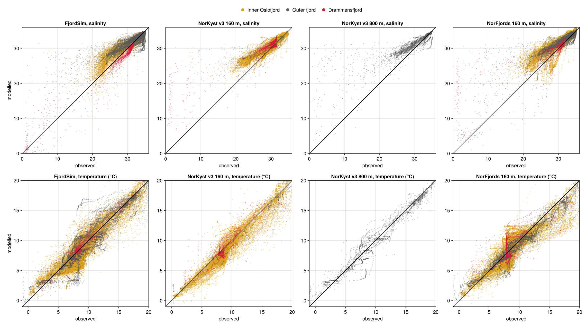
Only FjordSim reproduces the brackish surface water of the Drammensfjord: samples observed below 10 g/kg lie on the diagonal for FjordSim and at 10–30 g/kg in NorKyst v3 160 m and NorFjords (Fig. 3, check the Drammensfjord in Interactive Scatter Explorer). In its surface layer the salinity bias is +2.6 g/kg in FjordSim, NorKyst v3 160 m +10.4 and NorFjords +10.6 g/kg.
3.2 Taylor and target diagrams
Both diagrams (Taylor, 2001; Jolliff et al., 2009) score 9 depth layers, FjordSim beside NorKyst and NorFjords on the samples both have, so within a panel both share each layer's samples and σ_obs. Every statistic is divided by the observed standard deviation σ_obs of those samples. In the Taylor diagram (Fig. 4) the angle is the correlation r and the radius σ_model/σ_obs. The distance to the star (the observations) is the centred RMSE, the RMSE with the bias removed. In the target diagram (Fig. 5) the vertical axis is the bias, the horizontal one the centred RMSE, negative where the model varies less than observed. The distance to the origin is the RMSE; inside the unit circle a model beats the observed mean.
Each column in the (Fig. 4, Fig. 5) scores different stations (Table 6). σ_obs changes with the stations, and the same error lies farther out where it is small.
| Column | Inner Oslofjord | Drammensfjord | Outer fjord |
|---|---|---|---|
| NorKyst v3 160 m | all 23 | all 2 | KF-1, MO-2, SAN-5 |
| NorFjords 160 m | all 23 | all 2 | all 12 |
A few disclaimers before reading the diagrams:
- Within one panel, the comparison is fair: FjordSim and the reference model are scored on exactly the same samples.
- Across panels, the comparison is not fair: the NorKyst v3 160 m panels cover fewer stations (Table 6) and end at 76.4 m.
- The NorFjords column is the closest to FjordSim's overall score, since it covers all stations. It still stops at the end of June 2026.
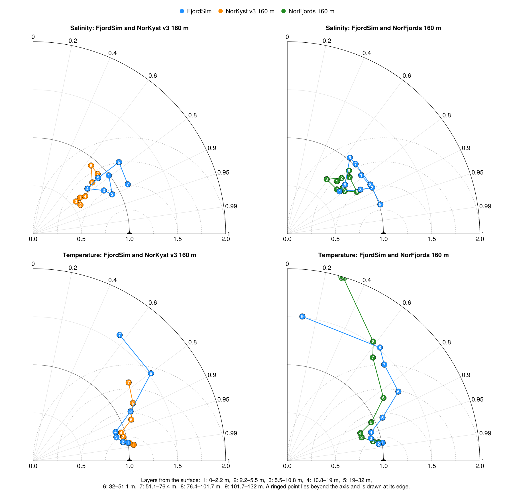
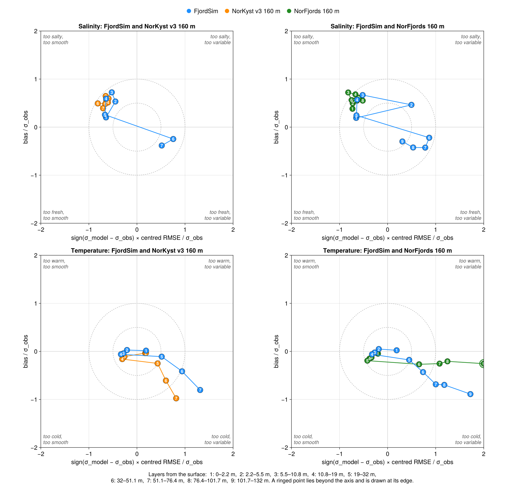
In salinity both reference models are too salty in every layer, by 0.38–0.72 σ_obs, and too smooth (σ_model/σ_obs 0.56–0.93). FjordSim is too salty above 32 m (0.19–0.67 σ_obs) and too fresh below (by 0.22–0.43 σ_obs). Below 32 m it has the observed variability (σ_model/σ_obs 1.00–1.02, NorFjords' 0.74–0.92), and at 101.7–132 m it correlates best (0.95 against 0.80 for NorFjords).
In temperature every model is inside the 0.5 circle down to 19 m. Below 32 m every model is too cold and too variable. FjordSim's cold bias grows with depth to 0.89 σ_obs at 101.7–132 m; NorFjords' stays at 0.21–0.27 σ_obs, but it varies more there (σ_model/σ_obs 2.17 against FjordSim's 1.51). At 51.1–76.4 m NorKyst v3 160 m is colder than FjordSim (−0.98 against −0.80 σ_obs) and varies less (1.28 against 1.59). On the samples both reach, down to 76.4 m, NorKyst v3 160 m correlates better than FjordSim in every layer, most at 51.1–76.4 m (0.77 against 0.56), where it covers 7 stations. Its lead is in the Inner Oslofjord (0.80 against 0.60); in the Drammensfjord FjordSim correlates better (0.39 against −0.16).
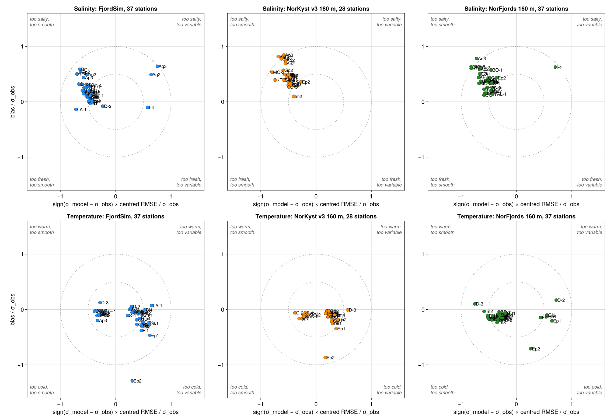
Fig. 6 scores FjordSim, NorKyst v3 160 m and NorFjords on all the casts each has, one point per station over all depths after 2024-11-01, scaled by that station's σ_obs. In salinity NorKyst v3 160 m and NorFjords are too salty at 28 of 28 and 37 of 37 stations, FjordSim at 31 of 37. Their median bias is 0.44 and 0.37 σ_obs against FjordSim's 0.16. FjordSim's RMSE is below σ_obs at 37 of 37 stations, NorKyst v3 160 m's at 25 of 28 and NorFjords' at 34 of 37. Every model is too smooth at most stations; FjordSim varies too much at Aq2, Aq3 and I-4, next to river and harbour outlets.
In temperature the RMSE is below σ_obs at 36 of 37 stations for FjordSim, 28 of 28 for NorKyst v3 160 m and 37 of 37 for NorFjords, with a small cold bias (median −0.09 σ_obs for FjordSim). FjordSim's exception is Ep2, which has a single cast.
3.3 Bias by station and depth
The surface layer is too salty at nearly every station in every model (Fig. 7). The largest errors are in the Glomma plume at I-1: +8.7 g/kg in FjordSim, +6.5 in NorKyst v3 800 m and +7.6 in NorFjords. Below 20 m FjordSim's salinity is within 0.5 g/kg at 28 of 37 stations; the exceptions are Bl4 (−1.0), Bn1 (−0.5), Cj1 (−0.7), D-2 (−1.1), D-3 (−1.1), Dm1 (−0.6), LA-1 (−1.2), MO-2 (+0.9), SAN-5 (+0.6). NorFjords is 0.4–1.3 g/kg too salty below 20 m in the Inner Oslofjord.
In the deep layer the inner basins are too cold in FjordSim: by 1.2 °C or more at Ep1, Cq1, Cp2, most at Ep1 (−1.4 °C). NorKyst v3 160 m is as cold where its columns reach 50 m (Ep1 −1.6 °C). NorFjords is within 0.9 °C.
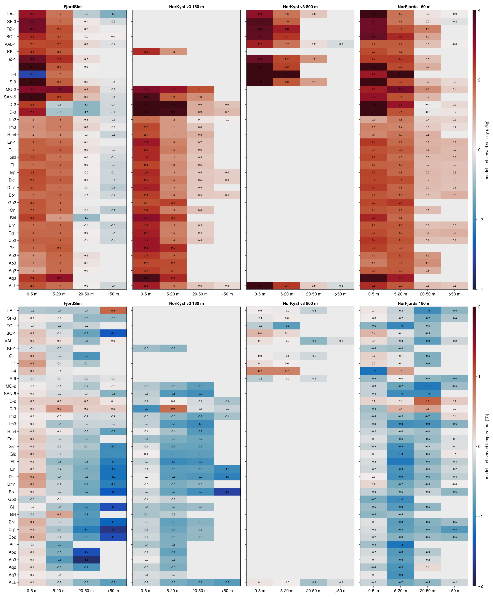
3.4 Bias by month
The overall scores hide a seasonal pattern (Fig. 8). FjordSim's surface layer is 1.8 °C too warm in January 2026 and 1.8 °C too cold in July 2026; NorKyst v3 160 m, on its own samples, is +0.1 and −0.8 °C in the same months. FjordSim's deep layer is too cold in 18 of 23 months, most in spring 2026 (−2.3, −2.3, −1.9 °C in March, April and May). The surface and upper layers are too salty in 23 of 23 months in FjordSim, 20 of 23 months in NorKyst v3 160 m, 19 of 20 months in NorKyst v3 800 m, 18 of 20 months in NorFjords 160 m.
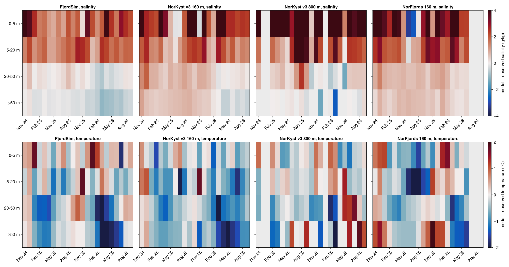
3.5 Stratification
The halocline, S(25 m) − S(1 m), is too weak in every model (Fig. 9). On the casts both have, FjordSim's is 1.3 g/kg too weak and NorKyst v3 160 m's 2.5. The bias (model − observed) is largest in the Drammensfjord: FjordSim −2.3, NorKyst v3 160 m −6.8, NorFjords −8.3 g/kg (FjordSim −2.0 on the same casts).
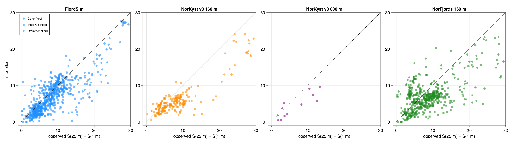
3.6 Surface water through the run
At D-2 FjordSim keeps the Drammenselva's fresh layer: its 1 m salinity is +1.1 g/kg off on average, NorKyst v3 160 m +8.2 and NorFjords +9.2 (Fig. 10). Surface temperature follows the casts in all models.
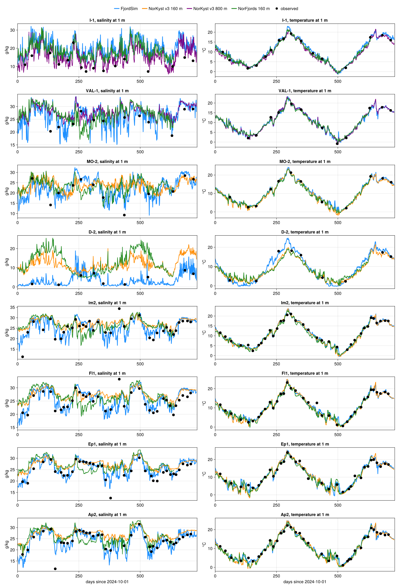
3.7 Deep water through the run
- Bunnefjorden is never renewed. At Ep1, 120 m, FjordSim starts from the cast and its salinity falls from 32.9 to 32.1 g/kg; the casts stay at 32.6–33.0. Its temperature falls from 8.4 to 6.0 °C; the casts read 7.7–9.1 °C. NorFjords renews the basin and overshoots, up to 34.8 g/kg (Fig. 11).
- The February 2026 inflow is missed. The casts show salty, warm water at Dk1 (60 m) and Fl1 (100 m) from February 2026. FjordSim brings in fresher, colder water: at Dk1 on 2026-02-09 it has 32.64 g/kg against 33.45 observed, and from March to July both stations are 2.0–3.2 °C too cold. NorKyst v3 160 m (33.76) and NorFjords (34.10) carry the inflow.
- The water outside the Drøbak sill is too fresh. At Im2, 100 m, the casts average 34.67 g/kg in February–June 2026; FjordSim 34.10, NorKyst v3 160 m 34.15.
- The Drammensfjord's deep water freshens. At D-2, 100 m, FjordSim starts from the cast at 31.6 g/kg and falls steadily to 31.0; the casts stay at 31.6. Its temperature is within 0.2 °C. FjordOs mixed the fresh surface water down into the basin too fast as well (Hjelmervik et al., 2017).
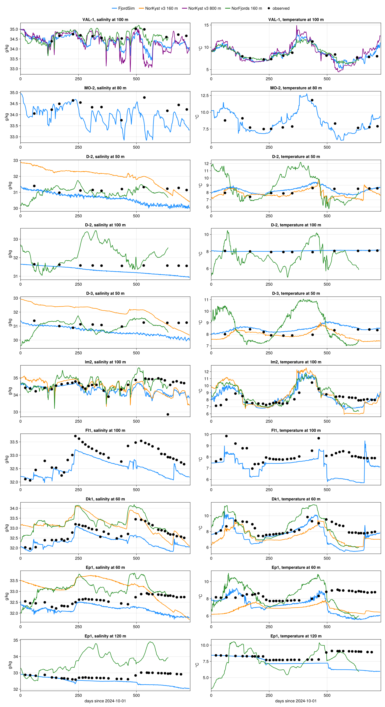
Fig. 12 shows the inner basins at every depth, with the casts in the same colour scale. NorKyst v3 160 m's columns end above the deep water at Fl1 and Ep1 (Table 4). Every station group: drammen S, drammen T, inner S, inner T, middle S, middle T, outer S, outer T.


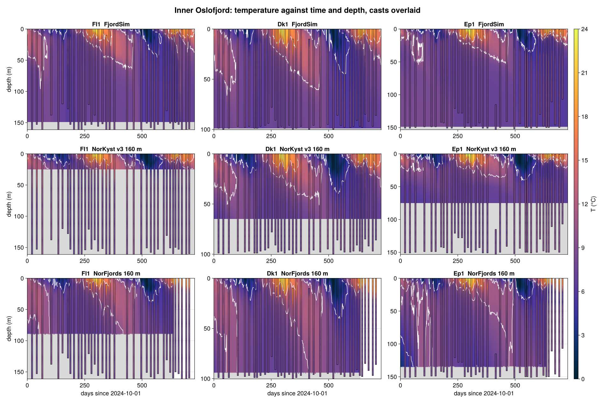
3.8 Errors from the open boundary
FjordSim takes its boundary water from NorKyst v3 800 m. Where NorKyst v3 800 m has values, in the outer fjord, the two models share their errors on the same samples, as Dalsøren et al. (2020) found for NorFjords and its parent model in the Hardangerfjord. The salty upper layer and the cold deep water of spring 2026 most likely come in over the open boundary.
The upper layer (5–20 m) is too salty. At IMR's 5 stations that NorKyst v3 800 m serves, FjordSim's upper layer is 1.8–2.9 g/kg too salty and NorKyst v3 800 m's 1.8–2.9, within 0.2 g/kg of each other at every station (Fig. 13). The two move together month by month (Fig. 14): at IMR's casts their monthly means correlate at r = 0.98 and differ by less than 0.5 g/kg in 14 of 17 months; at the NIVA stations, r = 0.68 and 12 of 20. The excess does not fade inwards: at the 23 Inner Oslofjord stations FjordSim's upper layer is 1.1–3.0 g/kg too salty (median 1.8). In the surface layer the models part where rivers set the salinity: at I-4, in the Glomma estuary, FjordSim is −3.0 g/kg off and NorKyst v3 800 m +15.1.
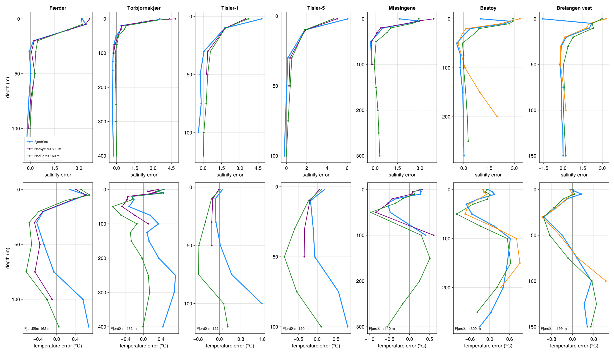
Time series at each IMR station: Bastøy, Breiangen vest, Færder, Missingene, Tisler-1, Tisler-5, Torbjørnskjær.


The deep layer is too cold in spring 2026. Below 50 m in March 2026 FjordSim is −2.6 °C off and NorKyst v3 800 m −2.4 °C at IMR's casts; at the NIVA casts, −2.7 and −3.9 °C. In 24 of 29 monthly means (NIVA and IMR casts apart) the two differ by less than 0.5 °C. FjordOs, forced by NorKyst-800, was also too cold and too salty at depth in the outer fjord (Hjelmervik et al., 2017).
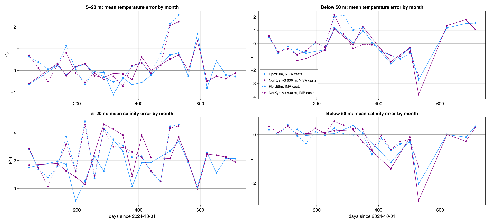
The ferry sees the excess grow towards the boundary. MS Color Fantasy's FerryBox measures salinity at 4 m every minute on the Oslo–Kiel route. On its northbound crossings on 18 February, 28 March and 16 June 2026, FjordSim's top cell is 5.5, 5.1 and 3.4 g/kg saltier than the FerryBox south of 59.2° N and 2.8, 0.3 and 1.4 north of 59.6° N. Each video shows FjordSim's surface maps with the ship's track coloured by the FerryBox, and both along the track.
3.9 Profiles
The profiles show the cold water from the boundary: below 40 m the March 2026 casts at VAL-1, Im2, Dk1, Ep1 average 8.3–9.1 °C, FjordSim 5.6–7.2 °C (Fig. 15). At D-2 FjordSim follows the brackish layer and the thermocline; the reference models are far too salty at the surface.
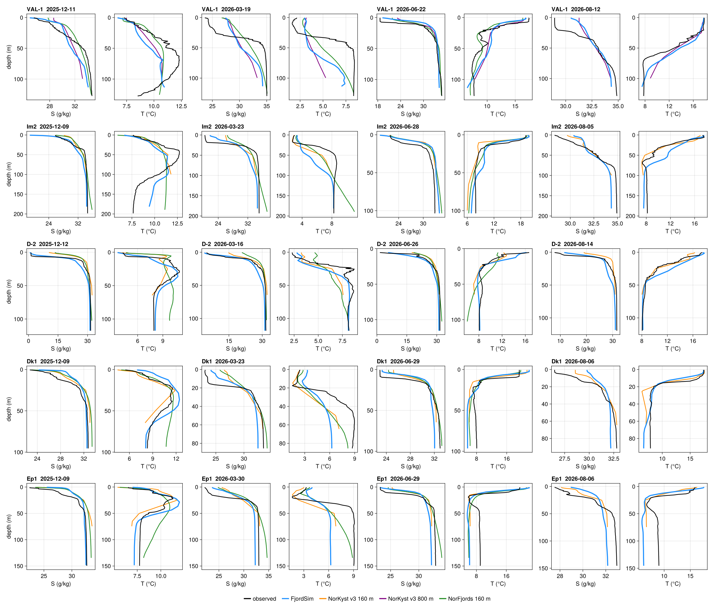
Every cast, by station: Bn1, D-2, D-3, Dk1, Ep1, Fl1, Gl2, Im2, LA-1, MO-2, O-1, SAN-5, SF-3, S-9, TO-1, VAL-1.


3.10 The Drammensfjord section
On the Svelvik sill (DS-53) the top 2 m flow out at 0.18–0.37 m/s on average. Water flows in at 6.7 m on 98 % of days (Fig. 16).
3.11 Currents in the Svelvik strait
The strait is the section point with the strongest depth-mean current, DS-46, north of the sill. There FjordSim's mean current in the top 5 m is 0.38–0.60 m/s out of the fjord; the ADCP measured 0.6–0.7 m/s at 1–5 m (Staalstrøm and Hjelmervik, 2017; Fig. 17). The flow turns into the fjord between 6.7 and 9.4 m in FjordSim and between 7 and 9 m observed. The strongest currents are too weak: FjordSim's upper-quartile speed in the top 5 m is 37 % below the observed 1.1–1.3 m/s. Its current never exceeds 1.3 m/s; the observed one did a quarter of the time at 3 m. The 60 h running mean of the outflow in the top 3.7 m follows Drammenselva's discharge (r = 0.85), as the outflow Staalstrøm and Hjelmervik measured 2.5 km further south did.
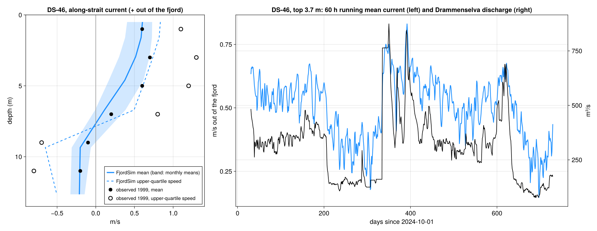
3.12 Sea level and tide
| Gauge | Observed | FjordSim | NorKyst v3 | NorFjords 160 m (2024) |
|---|---|---|---|---|
| Viker | 12.3 | 12.2 | 17.7 (800 m) | 16.4 (obs. 12.3) |
| Oscarsborg | 14.3 | 14.1 | 20.8 (160 m) | 18.1 (obs. 14.3) |
| Oslo | 15.0 | 15.1 | 21.8 (160 m) | 20.2 (obs. 14.9) |
FjordSim's tide is right: M2 within 0.2 cm and 9° at all gauges, after the boundary correction to Viker. NorKyst v3's M2 is 44–45 % too large, NorFjords' 27–36 % (Fig. 18). Table 8 gives the other constituents.
| Constituent | Viker | Oscarsborg | Oslo |
|---|---|---|---|
| M2 | 12.3 / 12.2 (−0°) | 14.3 / 14.1 (−8°) | 15.0 / 15.1 (−9°) |
| S2 | 2.4 / 2.5 (−0°) | 2.8 / 2.9 (−10°) | 2.9 / 3.1 (−12°) |
| N2 | 2.9 / 3.0 (+1°) | 3.3 / 3.5 (−7°) | 3.4 / 3.7 (−8°) |
| O1 | 2.7 / 2.7 (+1°) | 2.8 / 2.8 (−2°) | 2.8 / 2.9 (−2°) |
| K1 | 0.4 / 0.4 (+1°) | 0.5 / 0.4 (−20°) | 0.5 / 0.4 (−23°) |
| M4 | 1.2 / 0.7 (−32°) | 1.9 / 1.4 (−48°) | 2.3 / 1.8 (−48°) |
Weather drives the rest of the sea level. FjordSim carries 70–72 % of its observed variability (r 0.81), NorKyst v3 63–66 % (r 0.79–0.80). In daily means NorFjords carries 89 % (r 0.93–0.94), FjordSim 74 % (r 0.87–0.88) (Fig. 19).
In 5-day windows FjordSim is good in 93 % of them and NorKyst v3 in 94 % (Fig. 20). The two fail together: NorKyst v3 also fails 18 of FjordSim's 29 failed windows at the same gauge. The failed windows are calm: the observed weather-driven sea level varies by 6.5 cm (median standard deviation) in them, against 11.2 cm in the good ones.
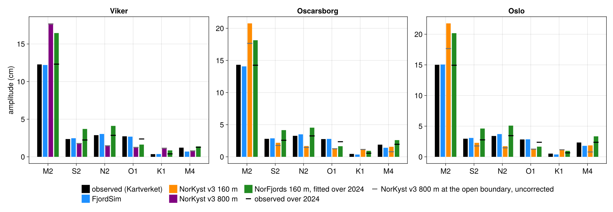
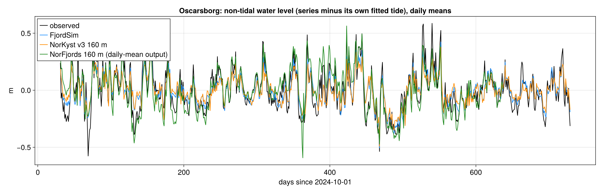
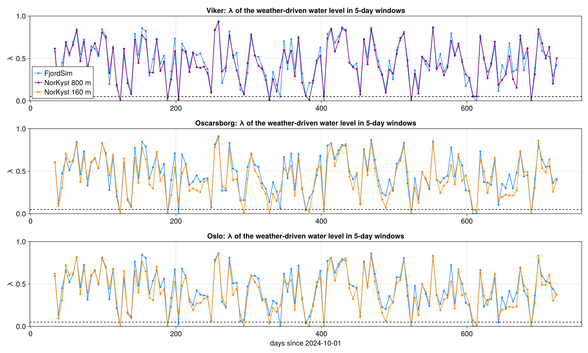
4. Summary
- Salinity: FjordSim beats every reference model (RMSE 2.02 against 2.23 g/kg for NorKyst v3 160 m, 3.39 against 4.32 for 800 m, 1.73 against 2.12 for NorFjords).
- Temperature: NorKyst v3 160 m is better (1.34 against 1.42 °C); NorKyst v3 800 m and NorFjords are about even with FjordSim.
- Variability: FjordSim has the observed range of salinity in the surface layer; the reference models smooth it. Below 51.1 m every model's temperature varies 28–117 % too much.
- Drammensfjord: only FjordSim keeps the brackish surface layer and a halocline close to the observed one.
- Svelvik: the strait's mean outflow and the depth where it turns are close to the observed ones; the strongest currents are 37 % too weak.
- Surface salinity: the top 20 m are too salty in every model, in FjordSim in 23 of 23 months, and no model has the Glomma plume.
- Surface temperature: FjordSim's surface layer is +1.8 °C off in January 2026 and −1.8 °C in July 2026.
- Inner basins: FjordSim misses the February 2026 inflow, which mixes to the bottom where it falls off the z-level steps behind the Drøbak sill, and never renews Bunnefjorden; in the deep layer they are 1.2–1.7 °C too cold.
- Open boundary: in the outer fjord FjordSim's upper layer is too salty by as much as NorKyst v3 800 m, its boundary source, month by month (r = 0.98 at IMR's casts), and the excess reaches the Inner Oslofjord. Its deep layer is 1.9–2.3 °C too cold in spring 2026, like NorKyst v3 800 m's near the boundary. Both errors most likely come in over the open boundary.
- Sill basins: they start from the NIVA casts, but their deep water freshens: by 0.6 g/kg at D-2 (100 m) and 0.8 g/kg at Ep1 (120 m) in two years.
- Second year: worse than the first (RMSE 1.44 to 1.73 g/kg, 1.16 to 1.83 °C).
- Sea level: M2 within 0.2 cm; 70–72 % of the weather-driven variability, more than NorKyst v3 and less than NorFjords; good in 93 % of 5-day windows.
FjordSim keeps the Oslofjord's stratification best: the lowest salinity RMSE, the halocline closest to the casts (1.3 g/kg too weak against 2.5 for NorKyst v3 160 m) and the only brackish Drammensfjord. NorKyst v3 160 m has the best temperature where it has water, but its columns end 40–116 m above the deepest casts in the sill basins (Table 4). NorFjords renews the deep basins and has the deep temperature closest to the casts, but it brings in too much salt water; FjordSim renews them too little.
The vertical grid can explain both FjordSim's better stratification and its poorer renewal of the deep basins. FjordSim's z-levels are flat, like the fjord's isopycnals, so the numerical mixing along them does not cross the stratification. The terrain-following levels of NorKyst and NorFjords tilt along the steep fjord walls, and the mixing along them does cross it (Marchesiello et al., 2009). But on a z-grid the seabed is a staircase. FjordSim's 3D snapshots show the February 2026 inflow crossing the Drøbak sill undiluted, then falling off the first step onto lighter water. There it mixes the column to the bottom and reaches the inner basins too light. Terrain-following levels carry such an inflow down along the seabed. Whether the grid also causes the better stratification is not tested: the models also differ in mixing, advection, rivers and forcing.
5. Code and data availability
- Model: FjordSim.jl at commit
ae89600, setupexamples/oslofjorden/oslofjorden.jl, runoslofjorden-full-t-surface(tags 20261117T010941 and 20261119T203432). - NIVA CTD casts: NIVA's ODM2 database (odm2.p.niva.no), access on request. FerryBox: ferrybox-api.niva.no.
- IMR casts: Vannmiljø (vannmiljoapi.miljodirektoratet.no).
- Sea level: Kartverket (vannstand.kartverket.no).
- NorKyst v3: MET Norway's THREDDS server (thredds.met.no). NorFjords 160 m: IMR, on request.
- Forcing: NORA3 (MET Norway), river discharge from NVE's HydAPI, bathymetry from Geonorge Dybdedata.
6. References
- Albretsen, J., Sandvik, A. D., Asplin, L., Lien, V., Skardhamar, J. (2022). NorKyst800: versjoner og arkiver. Rapport fra havforskningen 2022-35, Havforskningsinstituttet (Institute of Marine Research). hi.no
- Christensen, K. H., Albretsen, J., Asplin, L., Frøysa, H. G., Gusdal, Y., Iversen, S. C., Jensen, M. F., Johnsen, I. A., Kristensen, N. M., Sævik, P. N., Sandvik, A. D., Simonsen, M., Skarðhamar, J., Sperrevik, A. K., Trodahl, M. (2026). "Norkyst" version 3: the coastal ocean forecasting system for Norway. Geoscientific Model Development, 19, 2785–2798. doi:10.5194/gmd-19-2785-2026
- Dalsøren, S. B., Albretsen, J., Asplin, L. (2020). New validation method for hydrodynamic fjord models applied in the Hardangerfjord, Norway. Estuarine, Coastal and Shelf Science, 246, 107028. doi:10.1016/j.ecss.2020.107028
- Duveiller, G., Fasbender, D., Meroni, M. (2016). Revisiting the concept of a symmetric index of agreement for continuous datasets. Scientific Reports, 6, 19401. doi:10.1038/srep19401
- Hjelmervik, K., Kristensen, N. M., Røed, L. P., Staalstrøm, A. (2017). Evaluation of the FjordOs-model. FjordOs technical report no. 4, METreport 11/2017, Norwegian Meteorological Institute.
- Jolliff, J. K., Kindle, J. C., Shulman, I., Penta, B., Friedrichs, M. A. M., Helber, R., Arnone, R. A. (2009). Summary diagrams for coupled hydrodynamic-ecosystem model skill assessment. Journal of Marine Systems, 76(1–2), 64–82. doi:10.1016/j.jmarsys.2008.05.014
- Marchesiello, P., Debreu, L., Couvelard, X. (2009). Spurious diapycnal mixing in terrain-following coordinate models: the problem and a solution. Ocean Modelling, 26(3–4), 156–169. doi:10.1016/j.ocemod.2008.09.004
- Ramadhan, A., Wagner, G. L., Hill, C., Campin, J.-M., Churavy, V., Besard, T., Souza, A., Edelman, A., Ferrari, R., Marshall, J. (2020). Oceananigans.jl: Fast and friendly geophysical fluid dynamics on GPUs. Journal of Open Source Software, 5(53), 2018. doi:10.21105/joss.02018
- Røed, L. P., Kristensen, N. M., Hjelmervik, K. B., Staalstrøm, A. (2016). A high-resolution, curvilinear ROMS model for the Oslofjord. FjordOs technical report no. 2, METreport 4/2016, Norwegian Meteorological Institute.
- Staalstrøm, A., Hjelmervik, K. B. (2017). Strømforholdene i innløpet til Drammensfjorden. Vann, 52(1), 110–121.
- Taylor, K. E. (2001). Summarizing multiple aspects of model performance in a single diagram. Journal of Geophysical Research: Atmospheres, 106(D7), 7183–7192. doi:10.1029/2000JD900719